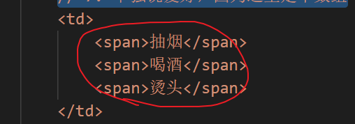
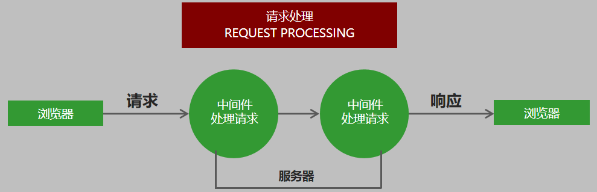

4. 数据库
10. 案例：用户信息增删改查
搭建网站服务器，实现客户端与服务器端的通信
连接数据库，创建用户集合，向集合中插入文档
当用户访问/list时，将所有用户信息查询出来
将用户信息和表格HTML进行拼接并将拼接结果响应回客户端
当用户访问/add时，呈现表单页面，并实现添加用户信息功能
当用户访问/modify时，呈现修改页面，并实现修改用户信息功能
当用户访问/delete时，实现用户删除功能
10.1 搭建网站服务器
搭建网站服务器，实现客户端与服务器端的通信
1.代码：
1 | // 1.搭建网站服务器，实现客户端与服务器端的通信 |
10.2 连接数据库
1.引入mongoose第三方模块。
1.这里也许会疑问，目录下没有node_modules，能引入成功吗？
2.可以的，查找规则：
- 当前目录没有
- 返回上级目录查找
3.具体规则去看看笔记：15-node.js-2-2.5;
1.然而，我过去看了后，没这一点
4.代码：
1
2// 2.引入mongoose模块
const mongoose = require('mongoose');
2.数据库链接
1.代码：
1
2
3
4// 2.1 数据库链接
mongoose.connect('mongodb://localhost:27017/ql_playground', { useNewUrlParser: true, useUnifiedTopology: true })
.then(() => console.log('数据库链接成功'))
.catch(() => console.log('数据库链接失败'))2.运行代码，成功
1
2
3
4
5
6
7PS F:\2-3ciyuan\11-data base-shujuk\3-lianxi\4-案例：User> nodemon .\app.js
[nodemon] 2.0.7
[nodemon] to restart at any time, enter `rs`
[nodemon] watching path(s): *.*
[nodemon] watching extensions: js,mjs,json
[nodemon] starting `node .\app.js`
数据库链接成功
2.1 创建用户集合规则
1.代码
1
2
3
4
5
6
7
8
9
10
11
12
13
14
15// 2.2 创建用户集合规则
const user = new mongoose.Schema({
name: {
type: String,
required: true,
maxlength: 15
},
age: {
type: Number,
min: 12
},
password: String,
email: String,
hobbies: [String]
})
2.2 创建用户集合
1.代码：
1
2// 2.3 创建用户集合
const User = mongoose.model('User', user);
2.3 在命令行工具那边导入user.json数据
1.命令：
1
mongoimport -d playground -c users --file ../user.json
2.4 完毕
10.3 当用户访问/list时，将所有用户信息查询出来
1.实现路由功能
2.呈现用户列表页面
3.从数据库中查询用户信息，将用户信息展示在列表中
1.实现路由功能
1.要实现路由功能
- 1.首先要获得用户的请求方式，请求地址。
- 2.对请求方式，请求地址判断。
- 3.这个路由功能就实现了（？？？
2.请求地址：
1.代码
1
2// 3.获取请求方式
const method = req.method;
3.请求路径：
1.先引入url
1
2// 4.1 引入url
const url = require('url')2.然后
1
2// 4.获取请求路径，先要引入url模块
const { pathname } = url.parse(req.url)- const { pathname }的写法，是对象解构的写法
- 笔记：25.4\A1\A1.2\4.2
- const { pathname }的写法，是对象解构的写法
4. 判断请求方式
1.代码：
1 | // 10.3.1.4 |
2.呈现用户列表
1.1 因为需求：呈现用户列表页面
在地址栏里面的请求，都是get
1.所以在get里面添加代码：把\list的判断，写在get里面
- get一般是数据的请求，页面的成立等
- post一般是功能，删除，注册，添加修改数据；
1
2
3
4
5
6
7
8
9
10
11
12
13
14
15
16
17
18
19
20
21
22
23
24
25
26
27
28
29
30
31
32
33
34
35
36
37
38let list = `<!DOCTYPE html>
<html lang="en">
<head>
<meta charset="UTF-8">
<title>用户列表</title>
<link rel="stylesheet" href="https://cdn.jsdelivr.net/npm/bootstrap@3.3.7/dist/css/bootstrap.min.css">
</head>
<body>
<div class="container">
<h6>
<a href="add.html" class="btn btn-primary">添加用户</a>
</h6>
<table class="table table-striped table-bordered">
<tr>
<td>用户名</td>
<td>年龄</td>
<td>爱好</td>
<td>邮箱</td>
<td>操作</td>
</tr>
<tr>
<td>张三</td>
<td>20</td>
<td>
<span>抽烟</span>
<span>喝酒</span>
<span>烫头</span>
</td>
<td>zhangsan@itcast.cn</td>
<td>
<a href="" class="btn btn-danger btn-xs">删除</a>
<a href="" class="btn btn-success btn-xs">修改</a>
</td>
</tr>
</table>
</div>
</body>
</html>`;2.注意里面是模板字符串，是反引号，是1左边那个；
1.2 这样，路径：http://localhost:3000/list
- 能呈现出html页面
- 不过我觉得肯定不是这样写，这因为是为了学习，给展示的原始写法。、
3.查询用户信息
1.从数据库中查询用户信息，将用户信息展示在列表中
2.代码：
find里面什么都不写，默认查找全部信息
User.find().then((result) => console.log(result))视频说当前我们不使用.then方式，使用异步函数的方式
1
2
3// 6.查询用户信息
// 6.1 这里没有用.then，而是用的异步函数语法
let user_find = await User.find()
2.1 因为是写在get里面的，所以要在网页那边请求一下，才会打印出数据库user集合的文档
3.如何把数据库里的数据，与，html链接呢？
https://www.bilibili.com/video/BV1j5411K7EH?p=60&spm_id_from=pageDriver
09.48
- 1.
${}是模板字符串里面特有的写法 - item是数组的每一个值，而这里是对象。所以item.name等等可以读取数据
3.1 单独说爱好，因为这里是数组。
1.在用户集合规则里面，
1
hobbies: [String]
2.而且数组里面的值，要显示在span当中

- 有多少个爱好，就要生成多少个span。
- 这又需要循环。（视频说的，这个怎么用循环做？
3.然后说又要拆分：（后面绝对有新的办法，因为这种办法太繁琐）
3.2 拆分后的样子：
https://www.bilibili.com/video/BV1j5411K7EH?p=60&spm_id_from=pageDriver
14:46
1 | // 对数据进行循环操作 |
- 到这里，列表展示用户的信息就做好了
10.4 添加用户功能
1. 先加入add页面的请求；
1.当用户访问/add时，呈现表单页面，并实现添加用户信息功能
1.1 因为请求是在get里面的，所以要在里面添加判断
1.2 代码：
2.然后在list的模块标签里面，把按钮的href改为/add
2. 准备功能实现
1.在add的模块标签里面，给表单，添加method="post"

2.既然要把表单的信息传输给服务器，那是不是要有个名字
- 最好与数据库里面的名字相同
2.1 name，password，email那些；
3.当所有信息填写完毕，就会点击按钮提交
- 这个时候，需要有个路由去处理这个事件；
3.1 在post请求那里添加：
1 | else if (method == 'POST') { |
- 当请求地址是add的时候，会有这个事件处理；
- 不写个前置条件。不知道在哪里处理；
4.接受用户提交的信息，将用户提交的信息添加到数据库中。
4.1 服务器接受请求事件是什么？.on+req=req.on
1 | // 接受用户提交的信息 |
4.2 因为post请求，是一步一步做的；所以要用到循环用的+=
1 | else if (method == 'POST') { |
1.打印出的结果是：
1
2数据库链接成功
name=123&password=321&age=123&email=3213%40qq.com&hobbies=%E6%95%B2%E4%BB%A3%E7%A0%81- 1.是字符串类型
- 2.我们需要对象的样式
2.修改成对象的样式：
1.引入querystring
const querystring = require('querystring');.req.on('end', () => { console.log(querystring.parse(formData)); }) <!--hexoPostRenderEscape:<figure class="highlight csharp"><table><tr><td class="gutter"><pre><span class="line">1</span><br><span class="line">2</span><br><span class="line">3</span><br><span class="line">4</span><br><span class="line">5</span><br><span class="line">6</span><br><span class="line">7</span><br><span class="line">8</span><br><span class="line">9</span><br><span class="line">10</span><br><span class="line">11</span><br><span class="line">12</span><br><span class="line">13</span><br><span class="line">14</span><br><span class="line">15</span><br><span class="line">16</span><br><span class="line">17</span><br><span class="line">18</span><br><span class="line">19</span><br><span class="line">20</span><br><span class="line">21</span><br><span class="line">22</span><br><span class="line">23</span><br><span class="line">24</span><br><span class="line">25</span><br><span class="line">26</span><br><span class="line">27</span><br><span class="line">28</span><br><span class="line">29</span><br><span class="line">30</span><br><span class="line">31</span><br><span class="line">32</span><br><span class="line">33</span><br><span class="line">34</span><br><span class="line">35</span><br><span class="line">36</span><br></pre></td><td class="code"><pre><span class="line"></span><br><span class="line"> + <span class="number">2.</span>在<span class="number">15</span>里面，post参数有这里笔记；</span><br><span class="line"></span><br><span class="line"></span><br><span class="line"></span><br><span class="line"><span class="meta">#### 3. 添加到数据库</span></span><br><span class="line"></span><br><span class="line"><span class="number">1.</span>将用户提交的信息添加到数据库中</span><br><span class="line"></span><br><span class="line">+ 上面已经能获取表单里面，填写的东西了</span><br><span class="line">+ 现在把它弄到数据库里面</span><br><span class="line"></span><br><span class="line"><span class="number">2.</span>代码：</span><br><span class="line"></span><br><span class="line">```js</span><br><span class="line"><span class="keyword">else</span> <span class="keyword">if</span> (method == <span class="string">'POST'</span>) {</span><br><span class="line"> <span class="comment">// 用户添加功能</span></span><br><span class="line"> <span class="keyword">if</span> (pathname == <span class="string">'/add'</span>) {</span><br><span class="line"> <span class="comment">// 接受用户提交的信息</span></span><br><span class="line"> <span class="keyword">let</span> formData = <span class="string">''</span>;</span><br><span class="line"> req.<span class="keyword">on</span>(<span class="string">'data'</span>, param => {</span><br><span class="line"> formData += param;</span><br><span class="line"> })</span><br><span class="line"> req.<span class="keyword">on</span>(<span class="string">'end'</span>, <span class="keyword">async</span> () => {</span><br><span class="line"> <span class="keyword">let</span> user_post = querystring.parse(formData);</span><br><span class="line"> })</span><br><span class="line"> <span class="comment">// 将用户提交的信息添加到数据库中。</span></span><br><span class="line"> <span class="keyword">await</span> User_collections.create(user_post);</span><br><span class="line"> <span class="comment">// 301代表重定向</span></span><br><span class="line"> <span class="comment">// location跳转地址</span></span><br><span class="line"> res.weiteHead(<span class="number">301</span>, {</span><br><span class="line"> Location: <span class="string">'/list'</span></span><br><span class="line"> });</span><br><span class="line"> res.end();</span><br><span class="line"> }</span><br><span class="line"> }</span><br></pre></td></tr></table></figure>:hexoPostRenderEscape-->
- 1.用await把数据库里的User集合插入文档设定
- 这样就不用写回调函数了
- 但记得在前面加上async
- 2.
res.weiteHead有待查阅；
4. 总结
1.当用户在地址栏里面访问/add的时候
- 我们呈递了添加用户的表单界面
2.接下来
算了，不写了；
3.代码：
1 | // @ts-nocheck |
10.5 修改用户
1.当用户访问/modify时，呈现修改页面，并实现修改用户信息功能
1.增加页面路由，呈现页面
1.在点击修改按钮的时候，将用户ID传递到当前页面
2.从数据库中查询当前用户信息，将用户信息展示到页面中
2.实现用户修改功能
2.先去相应的href修改：

3.增加路由
1.因为访问，也是从地址栏上访问的。所以从get
4.查询要被修改的数据
1.要通过ID
const { pathname, query } = url.parse(req.url, true);2.接着去拿id
let user_modify = await User_collections.find({ _id: query.id });3.打印测试一下；
发现是数组
改为findOne；
是对象了；
5.接下来要把这个对象与html字符串进行拼接？拼接么？
又要分开：
- 1.在模板字符串里面，改input里面的value的值
value="${user.age}"value="${user.name}"value="${user.email}"- 等等
- 2.爱好要单独说；
- 3.刷新页面，修改用户的页面，会展示出被修改用户的信息；
5.1 接下来，看爱好要怎么展示
https://www.bilibili.com/video/BV1j5411K7EH?p=62&spm_id_from=pageDriver
8:49
1.先写一个爱好的数组：
let hobbies_modify = ['游戏', '篮球', '游泳', '敲代码', '二次元', 'DL', 'P站']2.然后又要拆分，中间写一个循环。
1 | hobbies_modify.forEach(item => { |
5.2 解析：let isHobby = user_modify.hobbies.includes(item);
- 1.
user_modify.hobbies就是一个数组 - 2.因为
user_modify，已经是一个根据id获取文档对象的常量了- 里面的hobbies也是一个数组。
2. 实现用户修改功能
1.指定表单的提交地址，以及请求方式。
1.去修改action=“/modify”
2.在post添加新的路由；
1.把post里面的add复制过来
2.把插入，改为更新：
2.修改
0.接受客户端传递过来的修改信息，找到用户，将用户信息更改为最新的。
1.在页面上看url，是有id
2.但是，点击修改页面，就没有id了
- 为什么呢？
2.1 因为修改页面的跳转，是上面 get请求事件里面的第三个判断
1.人家里面有代码
let user_modify = await User_collections.findOne({ _id: query.id });
2.2 那么修改页面也会去get请求里面，写一个响应码？
- 看视频；
3.先去模块字符串里面，修改action
<form method="post" action="/modify?id=${user_modify._id}">
3.1 然后去更新数据那里写好条件；
await User_collections.updateOne({ _id: query.id }, user_post);
4.练习：
我记得我练习的时候出错了；结果就不记得了；
1.真的，稍微有什么不笔记，就记不住；
2.果然什么都要写啊，每一步的要写！连查资料都要写！
10.6 删除用户
1. 思路
1.当用户点击，删除按钮的时候，要向服务器发送一个请求；
2.并且，把当前用户的id，作为请求参数，传递给服务器端；
3.作为服务器端讲，要为这个请求，去创建路由（响应）
- 1.在这个路由中，要接收到，客户端，传递过来的id参数。
- 2.然后根据这个id，在数据库中找到，并且删除当前文档；
2. 代码
1.去修改href，在修改按钮那里；
1.1 链接有了，接下来去创建路由
2.因为a标签的请求方式是get，所以我们去get里面，再加一个else if
2.1 路由有了，在这个路由里面，我们要接收到，客户端传来的id参数
1.id参数，被存储在query里面；
const { pathname, query } = url.parse(req.url, true);2.可以先测试一下有没有id
有
2.2 接下来，我们用这个id，在数据库中找到对应的文档，并删除
1.首先，还记得删除文档的方法吗？
- 1.~.findOneAndDelete
2.写findOneAndDelete，里面的查询条件，可能是使用id的地方
1.我就说，怎么写个删除文档的方法就链接到数据库了
2.因为这正是数据库的方法
3.找到用户集合
1.它是变量
1
2// 2.3 创建用户集合
const User_collections = mongoose.model('User', user);
4.然后使用删除文档方法：
User_collections.findOneAndDelete({})5.里面的参数，就是查询条件，写入id；
- 1.既然是数据库集合的方法，那么这里的查询，自然就是查询文档下面的_id数据的值
1
2
3
4
5else if (pathname == '/remove') {
// res.end(query.get('id'));
let remove_id = query.get('id');
User_collections.findOneAndDelete({ remove_id });
}6.
3.如果停留在这一步，那么就要写.then了
- 1.我记得数据库对象都是返回的Promise，所以有.then
- 2.我们可以加 await，不仅同步了，还能直接用返回值
await User_collections.findOneAndDelete({ remove_id });3.而前面的构造函数，要被转换成 异步函数。
app.on('request', async (req, res) => {4.在前面已经使用了几次await，早被转换
4.
2.2 重定向
2.3 删除完了，我们要告诉浏览器；告诉用户；
1.我们可以返回ok，返回删除完毕
2.但也可以重定向到页表页面；
3.代码：
1
2
3
4res.writeHead(301, {
Location: '/list'
});
res.end();res.writeHead是什么？从字面意思看：响应报头？
去15那边看看响应报头的相关信息；
- 那边只说了，第一个参数是状态码
看看文档：
http://nodejs.cn/api/http.html#http_request_write_chunk_encoding_callback
4.文档错了啊；
应该是这个：http://nodejs.cn/api/http.html#http_response_writehead_statuscode_statusmessage_headers
语法：response.writeHead(statusCode[, statusMessage][, headers])
5.这里的headers，就是响应头，下面2.7的res.setHeader
2.4 我们先解决完这个响应报头，再说结果
1.encoding
英 [ɪnˈkəʊdɪŋ] 美 [ɪnˈkoʊdɪŋ]
v.把…译成电码(或密码);把…编码;把…译成外语
encode的现在分词2.根据文档也看不出什么
3.百度：
1.根据此文档而言：
- 第一个是HTTP状态码，如200(请求成功），404（未找到）等。
- 第二个是告诉浏览器发送的数据类型
- 第三个就是具体发送的是什么数据
2.三个参数；
response.writeHead(statusCode, [reasonPhrase], [headers])res.writeHead(200,{‘Content-Type’:‘text/html;charset=UTF8’});
3.但明显都不对；
2.5 那么，我们百度 重定向，试试；
- 1.光搜重定向，都是很老的文章
2.6 响应报头重定向
1.找到了一个关键点: res.setHeader
1
2
3
4
5
6
7
8
9
10
11
12
13
14
15var http = require("http");
var server = http.createServer();
server.on("request", function (req, res) {
if (req.url === "/") {
res.statusCode = 302;
res.setHeader("Location", "https://www.baidu.com/");
res.end();
}
})
server.listen(3000, function () {
console.log("server is running on port 3000");
})
2.7 去文档查看 res.setHeader
- 1.http://nodejs.cn/api/http.html#http_response_setheader_name_value
- 2.语法：response.setHeader(name, value)
2.8 无果，搜索关键词：Location
2.找到！
3.不过还是没啥作用
4.发现：
5.如果结合2.7里面的语法：response.setHeader(name, value)
1.难道这里的名称就是response.setHeader(name, value)的name吗？
2.我觉得完全有可能
3.因为：在2.6里面，在网上找到了一个东西：
res.setHeader("Location", "https://www.baidu.com/");
2.9 打印res.writeHead，看有没有什么东西
1.
2.返回结果：
返回了一堆东西，但是没有location
3.破案重定向
1.结果，在2.3那里破案了
2.为什么里面是个对象，而这个对象又有什么属性？
1 | res.writeHead(301, { |
3.答：里面是响应头对象header，更多信息来自：res.setHeader
2.7 去文档查看 res.setHeader
- 1.http://nodejs.cn/api/http.html#http_response_setheader_name_value
- 2.语法：response.setHeader(name, value)
4.而res.writeHead本身，则是在 2.2重定向-2.3里面；第一个参数状态码，是必写参数，
不写要报错；
4. 无效又不报错
1.找到了
await User_collections.findOneAndDelete({ remove_id });
2.改为：
await User_collections.findOneAndDelete({ _id:remove_id });
- 等等，为什么必须写这样的格式？
- 查询条件具体是怎样的
2.1 为什么要把 键值对都写出来；
- 1.是因为，没有具体指向哪一个对象，所以事先并不知道 键：_id
- 2.这种假设合理；
3.但还是有3个，无法删除
- 1.最后不知道怎么的，就只剩一个了；
3.1 看代码无果，去F12看了看报文：
- 1.发现了一个这个：Provisional headers are shown
10.7 案例优化
https://www.bilibili.com/video/BV1j5411K7EH?p=65&spm_id_from=pageDriver
1.我们把所有的代码，都写在了同一个文件当中。
- 1.在实际开发中，肯定不能这样
- 2.难以维护
2.使用了模板字符串，进行了很多拼接
- 1.模板字符串不报错，很容易出错
- 2.如果后面，要修改html，如何修改？修改起来很麻烦
1. 模块开发
1.0 分离数据库
1.在js中，我们要采用模块化，开发方式。
2.要根据功能，分离到不同的模块里去。
3.像数据库的代码，至少不能和服务器写在一起se；
4.视频里面说，他们一般在文件夹下面会创建一个叫：model的文件夹
- 用来放数据库的操作
- 我个人肯定还不习惯；2021-4-24 21:34:43
5.然后他在model文件下，创建了index.js
- 就只放了，数据库链接的代码
6.接着创建了user.js
- 只放了，创建集合规则，与创建集合的代码
6.1 在这里，还说了一下，在两个文件中，都引入了同样的模块。会不会浪费资源？
- 1.不会
- 2.有缓存；第一次引入使用后就缓存了，第二次直接从缓存里面拿，还说非常快；
1.1 开放出去
0.在笔记：15-2.1-567；有模块成员导出，导入的笔记；
7.在app.js当中，好多地方都用了创建集合的，构造函数的，那个变量名；
1 | // 2.3 创建用户集合 |
就是 User_collections
2.如果你觉得app.js懵的，就直接设为x.js用了y.js的函数
7.1 等等 const创建的是变量吗？
1.我们去文件：25.4-A1.2-3. let、const、var 的区别；查看
1.使用 var 声明的变量，其作用域为该语句所在的函数内，且存在变量提升现象。
2.使用 let 声明的变量，其作用域为该语句所在的代码块内，不存在变量提升。
3.使用 const 声明的是常量，在后面出现的代码中不能再修改该常量的值。
- 复杂数据的值可以变化
var let const 函数级作用域 块级作用域 块级作用域 变量提升 不存在变量提升 不存在变量提升 值可更改 值可更改 值不可更改 2.他是常量；
8.所以要开放出去。这里我懵了
1.代码：
module.exports = User_collections;- module.exports：模块出口；
2.他说的是：在其他文件中，引入user.js的时候，才可以拿到；
- 还要引入js？
3.
1.2 引入其他模块
1.app.js里面的数据库模块，单独出去作为一个js了
2.要引入才有的用
1.代码
1
2
3// 引入其他模块
require('./model/index.js');
require('./model/user.js');
3.user.js开放了一个User_collections构造集合函数。
1.我们可以创建一个常量去接收它。
- 1.开放
- 2.引入
- 3.接收
- 4.才可以用，额；
2.代码：
const User_collections = require('./model/user.js');
4.那么，数据库的代码，分离到其他模块。就完毕了；
1.3 测试分离数据库
1.分离了数据库后，测试一下，看能用不
2.测试：
- 1.添加用户
- 2.修改用户
- 3.删除用户
- 4.哦，没有查找功能；
3.引入其他模块，可以省略.js；
- 1.视频里面只省略了user的.js
- 2.我去试试index的可以省略不；
3.1 省略+测试
1.每一步，都去数据库那边刷新查看了
2.没有问题
3.都可以省略
4.同时可以想到：
1.上面的那些引入代码
1
2
3
4
5
6// 1.搭建网站服务器，实现客户端与服务器端的通信
const http = require('http');
// 4.1 引入url
const url = require('url');
const querystring = require('querystring');2.也许，也都是这样，后面都是省略了.js。可能都是js文件；
2. 字符串拼接
1.字符串的拼接，不像模块开发那么简单。
2.需要学习模板引擎；
https://www.bilibili.com/video/BV1j5411K7EH?p=66&spm_id_from=pageDriver
2021-4-24 22:10:54
5. 模板引擎artTemplate
1.目标：
能够使用模板引擎渲染数据
能够使用模板引擎进行原文输出
能够使用循环输出数据
能够知道如何引用子模板
能够知道如何如何进行模板继承
2.
5.1 模板引擎的基础概念
1. 模板引擎
1.模板引擎是第三方模块。
让开发者以更加友好的方式拼接字符串，使项目代码更加清晰、更加易于维护。
1 | // 未使用模板引擎的写法 |
1 |
|
2. art-template模板引擎
1.是腾讯公司出品的，文档也是中文
- 1.也是视频那个时候最快的。视频说的，所以是视频创作之时
2.下载
- 1.在命令行工具中使用 npm install art-template 命令进行下载
3.引入
1.使用const template[^1] = require(‘art-template’)引入模板引擎
1.通过require引入模板模块后，会返回一个方法。
2.前面刚开始说的，不是返回一个对象么，exports对象，这里怎么直接就是方法了？
我们将这个方法，命名为template。
- 是不是忘记复习开放和导入了
- 去复习
3.1 我决定，还是打印一下
- 1.打印代码
1 | const b = require('art-template'); |
2.返回代码：
1
2
3
4
5
6
7
8[Function: template] {
render: [Function: render],
compile: [Function: compile] {
Compiler: [Function: Compiler] { CONSTS: [Object] }
},
defaults: { '$extend': [Function (anonymous)] },
extension: [Function: extension]
}
3.还真的是，返回了一个方法；
4.我们再引入user，看看那边导出。我们接收的是不是exports对象
1
2const c = require('./user');
console.log(c);- 打印出：Model { User }
- 是对象，不过有名；
3.2 那么问题又来了。require(‘art-template’); 为什么是返回的方法（函数），而不是对象呢？
- 2021-4-25 21:51:23；
4.模板引擎的功能，是将html拼接，所以要告诉模板引擎要拼接的数据和模板在哪。
1.const html = template(‘模板路径’, 数据);
2.第一个参数是模板路径。
- 1.template方法，可以让html单独为一个文件。
- 2.数据，是一个对象。但可以直接写里面的属性名，就用了
3.返回值，是拼接好的模板字符串；
5.示例代码：
1 | // 导入模板引擎模块 |
- 1.虽然模板的后缀，是.art。
- 1.这是模板引擎规定好了。
- 2.里面是html
- 3.不过无论模板引擎的后缀是什么，里面都是html；
- 2.第二个参数，就是传递的是，要在模板里面展示的数据。
- 1.属性又是一个对象，里面有名字和年龄
5.1 接下来看模板当中的代码：
1 | <div> |
- 1.有两对花括号（大括号，我是这么叫的）
- 2.最外面的花括号，是把里面那个花括号当中的模板变量替换成数据，
2.1 代码练习
1. 创建
1.创建一个单独的文件夹template;
1.下面创建app.js
2.下面创建文件夹views[^2]，视频说，大家都用这个单词作为模板文件夹。
- 1.创建index.art; art!
2. art
3.写的就是html
1
2
3
4
5
6
7
8
9
10
11
12
13
14
15
16
<html lang="en">
<head>
<meta charset="UTF-8">
<meta http-equiv="X-UA-Compatible" content="IE=edge">
<meta name="viewport" content="width=device-width, initial-scale=1.0">
<title>Document</title>
</head>
<body>
{{name}}
{{age}}
</body>
</html>- 不过右下角，可以选择art格式；
- 视频里面还是html格式
3. JS
2.然后app.js这边代码：
1 | // 导入模板引擎 |
- 1.路径说的用绝对路径，不过也是动态的绝对路径；
__dirname获取，当前文件所在的路径，是相对个人电脑的路径。所以是动态的
4. 扩展
4.1 path.join
2.1 可以查查path.join，看能不能找到规范的资料；
官方文档：
具体的join文档
新增于: v0.1.16
path.join()方法会将所有给定的path片段连接到一起（使用平台特定的分隔符作为定界符），然后规范化生成的路径。长度为零的
path片段会被忽略。 如果连接后的路径字符串为长度为零的字符串，则返回'.'，表示当前工作目录。1
2
3
4
5path.join('/目录1', '目录2', '目录3/目录4', '目录5', '..');
// 返回: '/目录1/目录2/目录3/目录4'
path.join('目录1', {}, '目录2');
// 抛出 'TypeError: Path must be a string. Received {}'如果任何的路径片段不是字符串，则抛出
TypeError。
4.2 __dirname
1.官方文档：
http://nodejs.cn/api/modules.html#modules_dirname
2.上面好像有好东西。
- 1.是说一些node机制的。学了肯定会知道很多；
- 2.但怕用很多时间；
2.1 看了一些，没写笔记，有点模糊；
- 1.CommonJS 模块
- 好像就是创建导出，导入的机制的玩意
- 2.访问主模块
- 1.这个不懂啥意思；
- 3.附录：包管理器的技巧
- 1.这个大概是管理复杂的创造吧
- 4.缓存
- 1.导入了一次有缓存；
- 5.等等
2.2 这个我在意：模块封装器
在执行模块代码之前，Node.js 会使用一个如下的函数封装器将其封装：
1 | (function(exports, require, module, __filename, __dirname) { |
通过这样做，Node.js 实现了以下几点：
- 它保持了顶层的变量（用
var、const或let定义）作用在模块范围内，而不是全局对象。 - 它有助于提供一些看似全局的但实际上是模块特定的变量，例如：
- 实现者可以用于从模块中导出值的
module和exports对象。 - 包含模块绝对文件名和目录路径的快捷变量
__filename和__dirname。
- 实现者可以用于从模块中导出值的
- 1.以上是直接复制，从复制结果可以看出，那边的文字，大概是typora文档的语法；
- 2.我想去看看封装函数；
4.3 封装函数，函数封装
2.3 从已有的笔记25.1看出
- 1.封装函数，就和普通的创建函数，没什么区别。。。
- 2.百度吗？还是停在这一步，去学习？
- 1.先停在这一步吧，算了，去百度！
- 2.从这一篇文章可以看出：https://blog.csdn.net/ab_dk/article/details/104907471
- 1.确实，像普通的创建函数。继续
- 3.~https://blog.csdn.net/jiang7701037/article/details/80100753
- 1.也是普通的创建函数
- 2.但同时，也说了，这是入门的封装。继续！
- 4.~https://blog.csdn.net/Coveragehe/article/details/80845020
- 1.这篇文章说了两个：对象原型封装，与闭包封装。
- 2.我知道了，要继续学习原生的js才行；
- 3.因为毕设，我是跳过了，来node学习；2021-4-26 11:06:12
2.4 over；2021-4-26 11:06:21
3. 语法
1.art-template同时支持两种模板语法：标准语法和原始语法。
- 1.在入门案例中，使用的是标准语法；
1.1 标准语法可以让模板更容易读写，原始语法具有强大的逻辑处理能力。
2.标准语法：
原始语法：<%=数据 %>
3.1 输出
1.将某项数据输出在模板中，标准语法和原始语法如下：
标准语法：
原始语法：<%=数据 %><!-- 标准语法 --> <h2>{{value}}</h2> <h2>{{a ? b : c}}</h2> <h2>{{a + b}}</h2> <!-- 原始语法 --> <h2><%= value %></h2> <h2><%= a ? b : c %></h2> <h2><%= a + b %></h2> <!--hexoPostRenderEscape:<figure class="highlight"><table><tr><td class="gutter"><pre><span class="line">1</span><br><span class="line">2</span><br><span class="line">3</span><br><span class="line">4</span><br><span class="line">5</span><br><span class="line">6</span><br><span class="line">7</span><br><span class="line">8</span><br><span class="line">9</span><br><span class="line">10</span><br><span class="line">11</span><br><span class="line">12</span><br><span class="line">13</span><br><span class="line">14</span><br><span class="line">15</span><br><span class="line">16</span><br><span class="line">17</span><br><span class="line">18</span><br><span class="line">19</span><br></pre></td><td class="code"><pre><span class="line"></span><br><span class="line"></span><br><span class="line"></span><br><span class="line">1.1 原始语法里的=号，是输出的意思；</span><br><span class="line"></span><br><span class="line"></span><br><span class="line"></span><br><span class="line">1.2 代码示例：</span><br><span class="line"></span><br><span class="line">```html</span><br><span class="line"><body></span><br><span class="line"> {{name}}</span><br><span class="line"> {{1+1}}</span><br><span class="line"> <%=1+2%></span><br><span class="line"></span><br><span class="line"> <!-- 3. 三步运算符 --></span><br><span class="line"> {{ 1+2 == 3 ? '正确' : '错误'}}</span><br><span class="line"> <%=1+1==3 ? '正确' : '错误' %></span><br><span class="line"></body></span><br></pre></td></tr></table></figure>:hexoPostRenderEscape-->
- 1.里面可以直接运算
- 2.三步运算符也是可以的；
1.3 不解析标签
- 1.防止恶意代码；什么输出几万遍之类的，可以用html写么？。。。
3.2 原文输出
1.如果数据中携带HTML标签，默认模板引擎不会解析标签，会将其转义后输出。
2.语法：
标准语法：{{@ 数据 }}
原始语法：<%-数据 %>
3.代码：
1 | <!-- 标准语法 --> |
3.3 条件判断
1. 标准语法
1.在模块中可以根据条件来决定显示哪块html代码。
1 | <!-- 标准语法 --> |
1.1 单条件判断
{{if 条件}} ... {{/if}}
{{if 条件}}开始{{/if}}结束中间写条件；
2.多条件判断：
- 1.
{{if v1}} ... {{else if v2}} ... {{/if}} - 条件满足v1，就执行v1后面的，满足v2，就执行v2后面的。
3.代码示例：2.art+2.js
- 0.如果年龄大于18，输出年龄大于18；
- 1.如果年龄小于15，输出小于15；
- 2.否者年龄不符合要求；
F:\2-3ciyuan\11-data base-shujuk\3-lianxi\5-template
1.art代码：
1
2
3
4
5
6
7
8
9
10
11
12
13
14
15
16
17
18
19
20
21
<html lang="en">
<head>
<meta charset="UTF-8">
<meta http-equiv="X-UA-Compatible" content="IE=edge">
<meta name="viewport" content="width=device-width, initial-scale=1.0">
<title>Document</title>
</head>
<body>
{{if age2 > 18}}
年龄大于18
{{else if age2<15}}
年龄小于15
{{else}}
年龄不符合要求
{{/if}}
</body>
</html>2.JS代码：
1
2
3
4
5
6
7
8
9
10
11
12
13
14
15
16// 导入模板引擎
const template = require('art-template');
const path = require('path');
// 1.模板路径，建议用绝对路径
const views = path.join(__dirname, 'views', '2.art');
const html = template(views, {
name: '张三',
age: 20,
content: '<h1>我是标题1</h1>',
age1: 14,
age2: 16,
})
console.log(html);3.
2. 原始语法
1 | <!-- 标准语法 --> |
1 | <body> |
3. 自写：
1 | // 标准语法 |
3.4 循环
1.当我们使用find方法，从数据库中查询数据的时候。
- 1.它会返回一个数组，数组的值是对象。
- 2.对于数组里面又是对象的数据，我们要如何展示在页面当中呢？
- 1.通常采用循环的方式
- 2.
2.在模板引擎中，如何循环与展示数据？
1. 语法
1.1 标准语法
3.标准语法：{{each 数据}} {{/each}}
原始语法：<% for() { %> <% } %>
1 | <!-- 标准语法 --> |
3.1 在标准语法中，两对花括号里面，用each[^3]代表循环的开始。
- 0.target是要循环的数据；不懂；
- 1.也是要循环的那个数组；
- 2.重温，each target，就这两个词语，就已经完成了循环，所以，target就是被循环的数据；
- 3.这个数据，可能，只能是数组；
1.$index 索引
2.$value 这一次的数据
- 1.因为数组的值是对象，所以，每一次数据，都是那一次的对象；
- 2.能使用对象的语法，获得对象里面的属性和方法；
3.2 在原始语法中，有点JS的风格；target是那个数组；
4.代码：
0.js
1
2
3
4
5
6
7
8
9
10
11
12
13
14
15
16
17
18
19
20
21
22
23
24
25const template = require('art-template');
const path = require('path');
const views = path.join(__dirname, 'views', '3.art');
const html = template(views, {
users: [{
name: '张三',
age: 20,
sex: '男'
},
{
name: '爱丽丝',
age: 10,
sex: '女'
},
{
name: '小红帽',
age: 16,
sex: '女'
},
]
})
console.log(html);
1.art：
1
2
3
4
5
6
7<ul>
{{each users}}
<li>
{{$value}}
</li>
{{/each}}
</ul>1.$value,是每一次循环的值。
2.第一次循环，是数组第一个值，也就是第一个对象
3.这些，应该可以拿到3个对象。试试；
1.乱码
1
2
3
4
5
6
7
8
9
10
11
12
13
14
15<ul>
<li>
{"name":"张三","age":20,"sex":"男"}
</li>
<li>
{"name":"爱丽丝","age":10,"sex":"女"}
</li>
<li>
{"name":"小红帽","age":16,"sex":"女"}
</li>
</ul>2.用原文输出：
{{@$value}}1
2
3
4
5
6
7
8
9
10
11
12
13
14
15<ul>
<li>
[object Object]
</li>
<li>
[object Object]
</li>
<li>
[object Object]
</li>
</ul>3.把@放在$后面：
{{$@value}}报错：
1
2
3
4
5
6
7
8
9
10
11
12
13
14
15F:\2-3ciyuan\11-data base-shujuk\3-lianxi\node_modules\art-template\lib\compile\index.js:94
throw error;
^
[Error [TemplateError]: F:\2-3ciyuan\11-data base-shujuk\3-lianxi\5-template\views\3.art:4:9
2| {{each users}}
3| <li>
>> 4| {{$@value}}
5| </li>
6| {{/each}}
7| </ul>
CompileError: missing ) after argument list
generated: $$out+=$escape($@value)]
[nodemon] app crashed - waiting for file changes before starting...
4.1 只好跟着视频来了：
1 | <ul> |
- 1.返回值
1 | <ul> |
- 2.没有问题。。。。
1.2 原始语法
1.先不看视频。先自己写
1 | <ul> |
- 1.好吧，这个最后，还是看视频写的；
1.3 总代码
1 | <ul> |
2. 复习
1.把3.art删了，重写一遍；2021-4-26 15:06:41
2.代码：
1 |
3.报错：
CompileError: Unexpected token 'catch'
4.结果是最后面符号没对；
但报的啥？报的第一行；
1
2
3
4
5
6
7
8
9
10
11
12PS F:\2-3ciyuan\11-data base-shujuk\3-lianxi\5-template> node .\3.js
F:\2-3ciyuan\11-data base-shujuk\3-lianxi\node_modules\art-template\lib\compile\index.js:94
throw error;
^
[Error [TemplateError]: F:\2-3ciyuan\11-data base-shujuk\3-lianxi\5-template\views\3.art:1:1
>> 1| <ul>
2| {{each users}}
3| <li>
4| {{$index}}
CompileError: Unexpected token 'catch']- 傻逼；2021-4-26 15:22:34
3.5 子模板
1.使用子模板可以将网站公共区块(头部、底部)抽离到单独的文件中。
- 1.假如有一百个页面，都有相同的头部，底部；
- 2.这样改的时候，就一次可以改100个；
2.标准语法：{{include '模板'}}
原始语法：<%include('模板') %>
1 | <!-- 标准语法 --> |
2.1 子模板与循环条件不一样，是单标签。（好啊，这里也有）
- 循环or条件有开始与结束；
2.2 在标准语法中，include是一个关键字。但在原始语法中，include是一个方法，要加括号；
1. 代码
3.接下来，我们去编辑器中，验证这个代码
- 1.创建新文件夹common；放头部和底部的；
- 2.创建头部header.art
- 3.创建底部：footer.art
4.代码：
1 | {{include '../common/header.art'}} |
- header.art文件里面有：我是头部
- footer.art：我是底部
4.1 返回值：
1 | PS F:\2-3ciyuan\11-data base-shujuk\3-lianxi\5-template> node .\4.js |
2. 原始语法
1.代码：
1 | <% include('../common/header.art') %> |
3.6 模板继承
0.
1.使用模板继承可以将网站HTML骨架抽离到单独的文件中，其他页面模板可以继承骨架文件。
2.虽然同一个骨架，但每个页面的css，js链接是不一样的。可以在骨架留坑
- 1.不过看上面这张图，是看不出什么玩意；
3.示例代码：
1 |
|
- 1.预留位置怎么留？block；
- 2.后面的是名字，用于区分不同的block；
4.其他模板，如何继承骨架模板？
1 | <!--index.art 首页模板--> |
- 1.比如，现在是首页模板
- 2.extend就是继承的意思；
- 3.填坑，也需要写block。
2. 代码演示
1.新建5.js与5.art；
5.js
1
2
3
4
5
6
7
8
9
10const template = require('art-template');
const path = require('path');
const views = path.join(__dirname, 'views', '4.art');
const html = template(views, {
msg: '我是首页'
})
console.log(html);- 和4.js一样；
5.art
1
<p>{{msg}}</p>
2.在common文件夹，新建layout[^5].art（骨架文件）
1 |
|
3.在5.art里面继承骨架模板；
1 | {{extend '../common/layout.art'}} |
4.运行5.js，查看打印结果，看有没有骨架和填坑的；
1 | PS F:\2-3ciyuan\11-data base-shujuk\3-lianxi\5-template> node .\5.js |
- 继承骨架成功
- 填坑成功
3. 总结
1.所谓的模板继承，就是把页面当中的骨架放在一个单独的模板
2.其他的页面模板，可以用继承的方式，获得这个骨架
3.
3.7 模板配置
1. 导入变量
0.变量可以是，第三方模块的方法；用这些方法，可以处理数据；
1.向模板中导入变量 template.defaults[^6].imports.变量名 = 变量值;
- 1.比如说，我们从数据库中，查出了文章的发布时间。
- 2.但是，时间的格式，是原始的格式。
- 3.我们需要对时间的格式，格式化，或者自定义
- 1.如何格式化？
- 2.最简单的，用别人写好的方法
- 4.在模板中，允许调用方法吗？直接调用不行，用变量装着可以；
1.1 找一个处理时间的第三方模块
- 1.dateformat
- 2.下载它：npm install dateformat
- 3.引入
- 4.引入之后返回一个方法
- 5.第一个参数，是要处理的时间，
https://www.bilibili.com/video/BV1j5411K7EH?p=72&spm_id_from=pageDriver
1.2 创建6.js
1 | const template = require('art-template'); |
1.3 创建模板6.art；
1 | {{ date_format(time, 'yyyy-mm-dd') }} |
1.4 打印测试结果；
1.5 复习一下，看能根据笔记，自己写出来不；
1.dateformat的文档：https://github.com/felixge/node-dateformat
2.js一致，art自写：
{{ date_format(time,'yyyy-mm-dd HH:MM:ss 星期N') }}
2. 设置根目录
1.art-template，允许我们去配置全局根目录；
2.模板根目录 template.defaults.root = 模板目录
3.虽然视频里面看着不像是全局；
https://www.bilibili.com/video/BV1j5411K7EH?p=73&spm_id_from=pageDriver
4.设置根目录后，可以直接在template方法里面写文件名；
1 | const template = require('art-template'); |
3. 后缀
1.设置模板默认后缀 template.defaults.extname = ‘.art’
- 1.强行不想写；
- 2.设置了默认的后缀后，会自动渲染（添加）那个后缀；
2.代码：template.defaults.extname = '.art';
3.报错：
1 | PS F:\2-3ciyuan\11-data base-shujuk\3-lianxi\5-template> node .\6.js |
1.说没有找到文件
2.难道这里的方法更新了？
3.稍微百度了一下：template.defaults.extname;
- 没啥结果，这种可能得找art-template文档；
- 说好的腾讯创建，中文文档呢？怎么连官网都没有？
3.1 找到原因：
5.2 案例介绍 – 学生档案管理
1.目标：模板引擎应用，强化node.js项目制作流程。
2.知识点：http请求响应、数据库、模板引擎、静态资源访问。
1. 制作流程
建立项目文件夹并生成项目描述文件
创建网站服务器实现客户端和服务器端通信
连接数据库并根据需求设计学员信息表
创建路由并实现页面模板呈递
实现静态资源访问
实现学生信息添加功能
实现学生信息展示功能
1.1 初始化创建
1.建立项目文件夹并生成项目描述文件
1.1 创建文件夹：文件名随便，我自己：Student_management_cases
1.2 初始化：npm init -y
1.话说这一步的作用是什么？百度一下；
2.百度无果
3.查找以前的笔记
4.在15里面找到了，说的是项目的描述文档；记录文件？
1.2 创建本地服务器
1 | // 1.引入http模块 |
2.创建网站服务器实现客户端和服务器端通信
1 | // 3.当客户端访问服务器端的时候 |
1.3 链接数据库
3.连接数据库并根据需求设计学员信息表
3.1 链接数据库
1 | const mongoose = require('mongoose'); |
3.2 分离链接数据库
- 1.创建model文件夹，创建connect.js
- 2.把代码剪切过去；
3.3 在app.js引入链接数据库模块
1 | // 4.引入链接数据库模块 |
1.因为在这里模块，没有导出
2.所以不需要变量或常量来接收返回结果；
3.突发奇想：打印出来看看？
app.on('request', (req, res) => { console.log(require('./model/connect')); res.end('ok'); }) <!--hexoPostRenderEscape:<figure class="highlight yaml"><table><tr><td class="gutter"><pre><span class="line">1</span><br><span class="line">2</span><br><span class="line">3</span><br><span class="line">4</span><br><span class="line">5</span><br><span class="line">6</span><br><span class="line">7</span><br><span class="line">8</span><br><span class="line">9</span><br><span class="line">10</span><br><span class="line">11</span><br><span class="line">12</span><br><span class="line">13</span><br><span class="line">14</span><br><span class="line">15</span><br><span class="line">16</span><br><span class="line">17</span><br><span class="line">18</span><br><span class="line">19</span><br><span class="line">20</span><br><span class="line">21</span><br><span class="line">22</span><br><span class="line">23</span><br><span class="line">24</span><br><span class="line">25</span><br><span class="line">26</span><br><span class="line">27</span><br><span class="line">28</span><br><span class="line">29</span><br><span class="line">30</span><br><span class="line">31</span><br><span class="line">32</span><br><span class="line">33</span><br><span class="line">34</span><br><span class="line">35</span><br><span class="line">36</span><br><span class="line">37</span><br><span class="line">38</span><br><span class="line">39</span><br><span class="line">40</span><br><span class="line">41</span><br><span class="line">42</span><br><span class="line">43</span><br><span class="line">44</span><br><span class="line">45</span><br><span class="line">46</span><br><span class="line">47</span><br><span class="line">48</span><br><span class="line">49</span><br><span class="line">50</span><br><span class="line">51</span><br><span class="line">52</span><br><span class="line">53</span><br><span class="line">54</span><br><span class="line">55</span><br><span class="line">56</span><br></pre></td><td class="code"><pre><span class="line"></span><br><span class="line"> <span class="string">+</span> <span class="string">返回的是空对象；</span></span><br><span class="line"></span><br><span class="line"> <span class="string">+</span> <span class="string">接收一下再打印试试；</span></span><br><span class="line"></span><br><span class="line"> <span class="string">+</span> <span class="string">还是空对象。。。</span></span><br><span class="line"></span><br><span class="line"><span class="string">+</span> <span class="number">3.1</span> <span class="string">哦，我想到了，是因为那边本来就没有什么键值对；那边就是连接数据库，就完了；</span></span><br><span class="line"></span><br><span class="line"><span class="string">+</span> <span class="number">4</span><span class="string">.所以才不需要导出，不需要变量接收引入的返回值；因为也用不到调用某一个；</span></span><br><span class="line"></span><br><span class="line"><span class="string">+</span> <span class="number">5</span><span class="string">.</span></span><br><span class="line"></span><br><span class="line"></span><br><span class="line"></span><br><span class="line"><span class="number">3.4</span> <span class="string">创建学员集合规则模块；</span></span><br><span class="line"></span><br><span class="line"><span class="string">+</span> <span class="number">1</span><span class="string">.在model文件夹下，创建user.js</span></span><br><span class="line"></span><br><span class="line"><span class="string">+</span> <span class="number">2</span><span class="string">.引入模块，创建规则与集合</span></span><br><span class="line"></span><br><span class="line"> <span class="string">```js</span></span><br><span class="line"> <span class="string">const</span> <span class="string">mongoose</span> <span class="string">=</span> <span class="string">require('mongoose');</span></span><br><span class="line"> </span><br><span class="line"> <span class="string">//</span> <span class="number">1</span><span class="string">.创建学员集合规则</span></span><br><span class="line"> <span class="string">const</span> <span class="string">students_Schema</span> <span class="string">=</span> <span class="string">new</span> <span class="string">mongoose.Schema({</span></span><br><span class="line"> <span class="attr">name:</span> {</span><br><span class="line"> <span class="attr">type:</span> <span class="string">String</span>,</span><br><span class="line"> <span class="attr">required:</span> <span class="literal">true</span>,</span><br><span class="line"> <span class="attr">minlength:</span> <span class="number">2</span>,</span><br><span class="line"> <span class="attr">maxlength:</span> <span class="number">10</span></span><br><span class="line"> }<span class="string">,</span></span><br><span class="line"> <span class="attr">age:</span> {</span><br><span class="line"> <span class="attr">type:</span> <span class="string">Number</span>,</span><br><span class="line"> <span class="attr">min:</span> <span class="number">10</span>,</span><br><span class="line"> <span class="attr">max:</span> <span class="number">30</span></span><br><span class="line"> }<span class="string">,</span></span><br><span class="line"> <span class="attr">sex:</span> {</span><br><span class="line"> <span class="attr">type:</span> <span class="string">String</span></span><br><span class="line"> }<span class="string">,</span></span><br><span class="line"> <span class="attr">email:</span> <span class="string">String,</span></span><br><span class="line"> <span class="attr">hobbies:</span> [<span class="string">String</span>]<span class="string">,</span></span><br><span class="line"> <span class="string">//</span> <span class="string">所属学院</span></span><br><span class="line"> <span class="attr">collage:</span> <span class="string">String,</span></span><br><span class="line"> <span class="string">//</span> <span class="string">入学日期</span></span><br><span class="line"> <span class="attr">enterDate:</span> {</span><br><span class="line"> <span class="attr">type:</span> <span class="string">Date</span>,</span><br><span class="line"> <span class="string">//</span> <span class="string">默认</span></span><br><span class="line"> <span class="attr">default:</span> <span class="string">Date.now</span></span><br><span class="line"> }</span><br><span class="line"> <span class="string">})</span></span><br><span class="line"> </span><br><span class="line"> <span class="string">//</span> <span class="number">2</span><span class="string">.创建集合</span></span><br><span class="line"> <span class="string">const</span> <span class="string">students</span> <span class="string">=</span> <span class="string">mongoose.model('Students',</span> <span class="string">students_Schema);</span></span><br><span class="line"> </span><br><span class="line"> <span class="string">module.exports</span> <span class="string">=</span> <span class="string">students;</span></span><br></pre></td></tr></table></figure>:hexoPostRenderEscape-->
3.5 设计学员信息表
- 1.好像没说这个，视频就到创建路由了；
1.4 路由
https://www.bilibili.com/video/BV1j5411K7EH?p=75&spm_id_from=pageDriver
1.创建路由并实现页面模板呈递
2.记得以前写的路由，杂乱，不好维护；
1. 第三方模块 router
功能：实现路由
使用步骤：
1.获取路由对象
2.调用路由对象提供的方法创建路由
3.启用路由，使路由生效
1 | //1.获取路由对象 |
- 1.router.get，就是get请求响应的方法
- 2.router.post，是post请求响应的方法；
- 3.里面的第一个参数，就是路径；
- 4.第二个参数，就是写，如何处理这个请求，是一个回调函数。
- 1.里面有两个参数，分别是请求对象和响应对象；
- 5.
3.1 启用路由，使路由生效
- 1.require(‘router’)返回的，是一个函数。router所以也是一个函数
- 2.要调用，才能启用
- 3.调用这个路由，需要传递两个参数，分别是请求对象，响应对象
- 为啥
- 4.所以这个方法，需要在服务器对象下的request事件，调用；
- 5.每次客户端发来请求时，都会调用这个函数。
- 6.在方法内部，会判断，当前的请求方式与请求地址是什么。
- 7.然后在方法内部，会执行请求对应的处理函数。
- 8.也就是自己写的回调函数。
4.使用
1.先下载；npm install router
// 6.引入router模块 const getRouter = require('router'); // 6.1获取路由对象 const router = getRouter(); <!--hexoPostRenderEscape:<figure class="highlight coffeescript"><table><tr><td class="gutter"><pre><span class="line">1</span><br><span class="line">2</span><br><span class="line">3</span><br><span class="line">4</span><br><span class="line">5</span><br><span class="line">6</span><br></pre></td><td class="code"><pre><span class="line"></span><br><span class="line">+ ```<span class="javascript">js</span></span><br><span class="line"><span class="javascript"> <span class="comment">// 7.呈递学生档案信息页面</span></span></span><br><span class="line"><span class="javascript"> router.get(<span class="string">'/add'</span>, <span class="function">(<span class="params">req, res</span>) =></span> {</span></span><br><span class="line"><span class="javascript"> res.end(<span class="string">'test'</span>)</span></span><br><span class="line"><span class="javascript"> })</span></span><br></pre></td></tr></table></figure>:hexoPostRenderEscape-->
4.1 但是这里报错；
4.2 确实没有get
1 | [Function: router] { |
4.3 这个得去官方文档查看一下，是不是变更了方法；
1.这个是第三方模块
2.百度无果；
3.奇想：试试有没有效果
4.启用路由
1
2
3
4// 3.当客户端访问服务器端的时候
app.on('request', (req, res) => {
router(req, res, () => { })
})1.报错：
2.还在报错；
3.不管！
5.请求，响应，成功！
6.快速修复，禁止检查。滚！
1.首先，不知道这个检测是哪来的
- 1.百度说自带的；
7.那百度一下：此表达式不可调用，类型“Router”没有调用签名。
- 1.无果
4.4 解决办法：// @ts-ignore；让ts检查无视这些错误；
- 1.一个小时过去了；
1.5 页面模板呈递
1.当客户端，访问对应的路由的时候，我们要把对应的页面，呈递给用户
2.这需要模板引擎
- 1.没下的，下载：npm install art-template
3.在项目文件夹下面，创建，views[^2]文件夹；
4.在这个views文件夹下，我们要放模板文件；
1.把前端文件复制过来
2.只留下html
3.CSS，JS剪切到上级文件里的public文件夹（新建）
同时，这些文件，也被称为，静态资源文件；
5.回到app.js，引入模板引擎；
1 | // 8.引入模板引擎 |
6.接下来，在对应的路由里面，渲染模板；并把渲染的结果，响应给客户端；
1.template方法第一个参数是路径
1.去配置模板的根目录
2.需要引入模块path；
1 | // 9.2 引入path模板 |
- 2.修改views下面的html为art；
1 | // @ts-ignore |
- 3.页面一直在转：说明在等待返回结果。我们不是写了end返回了结果了吗？
- 1.点击X；
4.会看到，加载出来的html；
- 1.还是问：为什么一直转？
- 2.因为html页面里面有link链接css；而这里找不到css；
5.需要对静态资源做处理
1. 第三方模块 serve-static
0.服务serve-static静态
1.静态资源的代码，我们之前是写过的。但有更好的办法；
- 1.做项目的时候，想把更多的关注点，放在项目的逻辑上；
- 2.如果在考虑项目逻辑的同时，还要想开放静态资源这样的底层代码，项目的开发结构就会被破坏；
2.所以，一般会选择，使用第三方模板，来实现这功能；
3.功能：实现静态资源访问服务
4.步骤：
- 1.引入serve-static模块获取创建静态资源服务功能的方法
- 1.这个的返回值也是方法（现在返回值是对象变少了？）
- 2.require(‘serve-static’)返回的是一个方法
- 1.第一个参数是静态资源目录；
- 2.返回的还是一个方法，也就是serve
- 3.这个方法是为了启用；
- 2.调用方法创建静态资源服务并指定静态资源服务目录
- 3.启用静态资源服务功能
- 1.第三个参数，和路由的启用一样，是一个回调函数。必须参数；
1 | const serveStatic = require('serve-static') |
5.在app.js中，有了app.listen，就不需要server.listen了；
6.刷新页面；css获取成功；
7.app.js的代码样子：
1 | // 10. 引入静态资源访问模块 |
7.1 之前写的原生代码的样子：
- 1.是模板继承吗？
1 | <!--index.art 首页模板--> |
- 2.如果是老办法，一百个模板，岂不是写一百次；
8.复习；
2. 列表页面
1 | router.get('/list', (req, res) => { |
- 就完了；
1.不用到各个页面模板写css了；
2.不需要再处理，第二个渲染模板的静态资源了；
1.6 传递数据库
添加学生信息功能步骤分析
1.在模板的表单中指定请求地址与请求方式
2.为每一个表单项添加name属性
3.添加实现学生信息功能路由
4.接收客户端传递过来的学生信息
5.将学生信息添加到数据库中
6.将页面重定向到学生信息列表页面
1.表单操作
1.给index.art修改代码
1.
<form action="/add" method="POST">2.给input添加name；
- 1.注意name，要与数据库集合的规则名相同；
- 2.所以name是name，不是username，集合规则那边是name，不是username；
1
3.有一个下拉菜单，这个把name写在哪？
1.写在select那里；
<select class="normal" name="collage">
2. 路由
1.新写一个router.post
1 | // 11.实现学生信息添加功能路由 |
2.处理成对象，好像是新方法；
- 1.不，是老办法；
- 2.引入querystring模块
- 3.querystring.parse
1 | // 11.1 引入querystring模块 |
3. 传递给数据库
1 | req.on('end', async () => { |
1.异步：await student.create(date);
2.直接返回返回值，省略回调函数；
1.这里的回调函数是什么？去15-4.2-2. 创建文档–增；看以前笔记
1
2
3
4
5
6Course.create({name: 'JavaScript基础', author: '黑马讲师', isPublish: true}, (err, doc) => {
// 错误对象
console.log(err)
// 当前插入的文档
console.log(doc)
});
2.1 老样子；问：await之后，怎么输出错误信息？
- 1.百度了一下，全是try/catch；
- 2.还没有.then+.catch方便
- 3.也许后面的Express框架会说；
4. 完毕
1.完毕，现在我们实习了数据添加到数据库当中；
2.不过在list那边，还不会呈现出来；
1.7 list呈现
1. 分析
0.学生信息列表页面分析.
1.从数据库中将所有的学生信息查询出来
2.通过模板引擎将学生信息和HTML模板进行拼接
3.将拼接好的HTML模板响应给客户端
2. 模板拼接
4.找到呈现信息列表的路由；
5.查询学生信息
1 | // 14. 查询学生信息 |
6.找到了学生信息，与模板拼接；
1 | router.get('/list', async (req, res) => { |
- 1.let students = await student.find();
- 1.students是一个数组；
7.在list.art写循环，自动生成列表；
1 |
|
变化：
1 | {{each students}} |
3. 格式问题
1.list能呈现了；但是：
这些格式有问题；
2.性别
2.1 去添加数据的模块，看单选框里面存的值是什么？
1 | <label> |
2.2 value是0与1
- 1.改成男和女吗？
- 2.不，有时候会这样，value会写一些代替的数字
2.3 在模板那边改；
<th>{{$value.sex == 0 ? '男' : '女'}}</th>
3.同理去爱好修改：
- 1.可能这里有三个吧，岂不是又是一个循环？
- 2.视频里面直接改value了
3.1 但是里面是数组，而且以前的也没变；
- 1.还是要循环；
1 | {{each students}} |
4.时间格式
1.依然像上次一样，用第三方模块处理；
2.先引入：
1 | // 14. 引入时间模块 |
4.1 导入时间模板变量
1 | // 14.1 导入时间模板变量 |
4.2 去list.art直接使用方法，格式化；
1 | <th> |
1.为什么可以直接使用方法date_format？
2.app.js与list.art它们到底是什么关系？
1.感觉这个是联系点
1
2
3let html = template('list.art', {
students: students,
});2.const html = template(‘模板路径’, 数据);
3.第一个参数，只是模板路径；表示我用了某某模板
4.然后这个模板也能用app.js的方法了吗？
5.还是说，就像原生代码一样，只是有合在一起的效果，但视觉上是分离的
6.我认为上面假设合理；
2. 优化
1.有没有相对独立的代码
2.路由；
2.1 路由
1.把路由分离
2.在案例文件夹下面创建route文件夹，route文件夹下创建index.js文件
3.剪切代码
1 | // 7.呈递学生档案信息页面 |
4.剪切需要的模块
1 | // 5.引入数据库集合模块 |
- 1.注意user.js的路径
5.需要复制的代码模块
1 | // 8.引入模板引擎 |
6.导出router；引入router
1 | // 导出 |
6. Express框架
目标：
能够使用Express创建web服务器
能够使用Express处理请求参数
能够使用Express处理静态资源
能够使用中间件处理请求
能够在Express中集成art-template模板引擎
目录：
Express框架简介及初体验
Express框架请求处理
express-art-template模板引擎
Express中间件
6.1 Express框架简介及初体验
1. Express框架是什么
1.Express是一个基于Node平台的web应用开发框架，它提供了一系列的强大特性，帮助你创建各种Web应用。我们可以使用 npm install express 命令进行下载。
2. Express框架特性
1.提供了方便简洁的路由定义方式
- 1.第三方模块router，出至于express
2.对获取HTTP请求参数进行了简化处理
3.对模板引擎支持程度高，方便渲染动态HTML页面
4.提供了中间件机制有效控制HTTP请求
5.拥有大量第三方中间件对功能进行扩展
3. 对比之路由
1.原生Node.js与Express框架对比之路由
1 | app.on('request', (req, res) => { |
1 | // 当客户端以get方式访问/时 |
4. 对比之获取请求参数
1 | app.on('request', (req, res) => { |
1 | app.get('/', (req, res) => { |
5. Express初体验
1.下载框架：npm install express
2.创建文件夹 7-express，创建 1.js
3.引入
1 | // 1.引入express框架 |
4.引入了express，就不需要http了
4.1 创建网站服务器（不是本地服务器吗？）
1 | // 2.创建网站服务器 |
- 1.直接就是调用方法。。。
4.2 监听端口
1 | // 3.监听端口 |
5.创建路由。
- 1.在express方法里面，有get方法与post方法；等于app有
app.get()
2.当客户端什么都不写，只访问localhost:3000；
- 1.默认的地址是‘/’；
- 2.
app.get('/')
3.第二个参数，是请求处理函数，也是回调函数。
app.get('/', (req,res)=>{})
4.对客户端响应；
1.这里不用end了，而是send[^9]；
2.在send方法里面，会自动检查响应数据的类型，并自动写在响应报头中；
- 1.同时也会设置响应类型的编码，以防止乱码的情况
3.还会自动设置http状态码；
4.可以去F12-network看
5.找不到页面也进行了优化；
6.还可以写json数据，以前的end是不行的；
1 | // 4.创建路由 |
6.以上是入门案例与基础；
6.2 中间件
1. 什么是中间件
https://www.bilibili.com/video/BV1j5411K7EH?p=81&spm_id_from=pageDriver
1.中间件就是express提供的一堆方法，可以接收客户端发来的请求、可以对请求做出响应，也可以将请求继续交给下一个中间件继续处理。
- 1.中间件，是专门接收请求与处理请求的。视频说的
- 2.中间件，像阀门；

2.中间件主要由两部分构成，中间件方法以及请求处理函数。
中间件方法由Express提供，负责拦截请求，请求处理函数由开发人员提供，负责处理请求。
1 | app.get('请求路径', '处理函数') // 接收并处理get请求 |
- 1.刚使用的路由，就是中间件
3.可以针对同一个请求设置多个中间件，对同一个请求进行多次处理。
默认情况下，请求从上到下依次匹配中间件，一旦匹配成功，终止匹配。
3.1 请求处理函数，除了请求参数，响应参数，还有第三个参数，next方法；
- 可以调用next方法将请求的控制权交给下一个中间件，直到遇到结束请求的中间件。
1 | app.get('/request', (req, res, next) => { |
2. app.use中间件用法
1.app.use 匹配所有的请求方式，可以直接传入请求处理函数，代表接收所有的请求。
- 1.无论get，post；
- 2.当然如果它在后面，前面的请求被其他路由处理了，也不会接收到；
- 3.用变量常量的说话：没有变量提升；
1 | app.use((req, res, next) => { |
2.app.use 第一个参数也可以传入请求地址，代表不论什么请求方式，只要是这个请求地址就接收这个请求。
1 | app.use('/admin', (req, res, next) => { |
3.注意，上面两者，不会互相阻断。两个路由都可以处理/admin；
3. 中间件应用
1.路由保护，客户端在访问需要登录的页面时，可以先使用中间件判断用户登录状态，用户如果未登录，则拦截请求，直接响应，禁止用户进入需要登录的页面。
1.1 代码：
- 1.然而真实的判断是否登录，这里不是。
- 2.只是模拟的；
1 |
|
2.网站维护公告，在所有路由的最上面定义接收所有请求的中间件，直接为客户端做出响应，网站正在维护中。
2.1 在所有路由前面，写use路由；不写next()即可
1 | // 6.网站公告 |
3.自定义404页面
3.1 这个就是放在最下面，上面的所有路由都没有接收到请求，那么这个请求的地址，就是404了
- 1.但是，send返回的状态码是200
- 2.如果想改成404；
- 1.使用res.status[^10]()
- 2.参数是状态码；
- 3.它可以链式调用；
1 | // 7. 自定义404 |
4. 错误处理中间件
4.1 同步出错
1.在程序执行的过程中，不可避免的会出现一些无法预料的错误，比如文件读取失败，数据库连接失败。错误处理中间件是一个集中处理错误的地方。
- 1.逻辑错误，在开发阶段
- 2.读取文件，文件不在，或者等等错误，必须是执行后
- 3.而一旦出错，代码就会中断。也不会返回东西
- 4.必须要在开发阶段，处理错误才行；
1.1 如果在每个可能出错的地方添加处理错误的代码；就很多了
- 1.中间件提供了一个集合
- 2.注意有4个参数，不过next用不到的话，就可以不写；
1 | app.use((err, req, res, next) => { |
1.2 去代码验证：创建4.js
1.创建错误处理中间件
1
2
3
4// 4.错误处理中间件
app.use((err, req, res, next) => {
res.status(500).send('服务器端错误');
})2.创建故意错误
1 | // 5.创建故意错误 |
1.3 Error()
1.在node.js当中，有一个构造函数，叫Error()
- 构造函数，是包对象的；
2.它的作用：创建错误；
3.代码：
1 | // 5.创建故意错误 |
1.4 在处理错误中间中的 err参数，其实就是 new Error对象；
- 1.下面的一个键名：message，就是里面的信息；
1 | // 4.错误处理中间件 |
1.5 执行文件，nodemon 4.js
1.6 没有错误，不会执行错误中间件；
1.7 注意，错误中间件，只能捕获到同步代码出错；
1.8 上面的总代码：
1 | // 1.引入express框架 |
4.2 异步出错
1.异步出错的时候，需要我们手动去调用错误中间件；
2.当程序出现错误时，调用next()方法，并且将错误信息通过参数的形式传递给next()方法，即可触发错误处理中间件。
1 | app.get("/", (req, res, next) => { |
3.代码验证：
3.1 引入读取文件模块
3.2 故意读取错误文件
3.3 记得要添加next参数
1 | const express = require('express'); |
5. 捕获错误
1.在node.js中，异步API的错误信息都是通过回调函数获取的，支持Promise对象的异步API发生错误可以通过catch方法捕获。
2.异步函数执行如果发生错误要如何捕获错误呢？
- 异步函数就特殊了，它是异步代码，但是写成了同步形式；
2.1 try catch 可以捕获异步函数以及其他同步代码在执行过程中发生的错误，但是不能其他类型的API发生的错误。
try/catch，是node.js专门来捕获异步函数的出错的；
1.同时也能捕获同步错误；但不能捕获 除了异步函数的，异步错误
2.同时也为前面解惑了；
1 | app.get("/", async (req, res, next) => { |
2.2 语法解析
- 1.try[^11]与catch后面都是大括号
- 2.try里面写可能出错的代码
- 1.没有错误，跳出try/catch
- 2.报错：进入catch
- 3.catch[^12]的参数，是错误信息；
2.3 代码验证：创建5.js
- 1.我们还是读取文件，但要改造成支持异步函数的形式；
- 2.需要引入新的模块；fs默认不支持异步函数；
- 1.它是util模块下的方法，util模块不熟。但这里先不去查阅了解；
1 | const promisify = require('util').promisify; |
- 3.异步API化 fs.readFile , 异步函数化 回调函数，
1 | const express = require('express'); |
2.4 这样写之后，命名行那边不会报错，因为有处理报错。
- 1.程序不会因为某个文件没读取到，而终止所有运行；
6.3 Express框架请求处理
https://www.bilibili.com/video/BV1j5411K7EH?p=86&spm_id_from=pageDriver
1. 构建模块化路由
1.1 创建路由
1.项目的路由是很多的；
2.有时候多了，就要分类；分成各个模块
3.先看一个代码：二级路由
1 | const express = require('express') |
3.1 这句代码：app.use('/home', home);
- 1.以前home那里，都是写的回调函数，而这里，写的是路由对象；
- 查看app.use；没看到什么信息
3.2 express.Router();的文档倒是没问题，就是创建路由对象。
- 1.平常在express的框架下，处理get请求，post请求，都是在app(服务器)下处理的
- 2.而这个路由对象，居然可以替代app；来形成几个层次的路由；
4.这个怎么模块化了？模块化到底是什么？
1.回想刚学node的时候
Node.js规定一个==JavaScript文件==就是一个模块，模块==内部定义的变量和函数==默认情况下在==外部无法得到==
2.也就是说，express的路由，会和上面没用express框架的路由一样，会在一个单独的js文件。不在app.js里
5.视频说，上面是创建路由的基础代码。上面才是创建路由？那之前的app.get，app.post，其实不是在创建路由？
- 1.不，我感觉是路由，反正是路由的功能；
1.2 路由模块化
6.看代码：
1 | // home.js |
6.1 先是创建了home路由，再用home.get；路由再路由，创建了2级路由；
7.上面，其实就已经是一个模块
8.看另一个模块：
1 | // admin.js |
8.1 和6一模一样；最后，要记得导出路由对象；
- 1.创建路由对象
- 2.路由再路由，二级路由。
- 3.res.send返回什么；
8.2 二级路由的回调函数里面，都没看到req，与res；
9.要想使用路由模块，还是需要在app引入，然后为每个路由模块，匹配请求路径；
1 | // app.js |
10.代码验证：上面的6.js没写东西，就写使用路由模块吧；
1.要创建新文件了；route，路由文件夹；装路由模块；为啥少一个r，不是router；查查两个单词；
route
英 [ruːt] 美 [ruːt]
n.路线;路途;(公共汽车和列车等的)常规路线，固定线路;途径;渠道
v.按某路线发送router
英 [ˈruːtə(r) , ˈraʊtə(r)] 美 [ˈruːtər , ˈraʊtər]
n.路由器(传送信息的专用网络设备)
n.槽刨2.感觉不出什么区别，不过，规律是：文件夹使用route，代码里面基本都是router；模块名，方法名也是router
10.1 route文件夹下，创建home.js，admin.js
1.写入上面的代码；要引入express模块，而且二级路由回调函数写了参数！
1
2
3
4
5
6
7// home.js
const express = require('express');
const home = express.Router();
home.get('/index', (req,res) => {
res.send('欢迎来到博客展示页面');
});
module.exports = home;// admin.js const express = require('express'); const admin = express.Router(); admin.get('/index', (req,res) => { res.send('欢迎来到博客管理页面'); }); module.exports = admin; <!--hexoPostRenderEscape:<figure class="highlight http"><table><tr><td class="gutter"><pre><span class="line">1</span><br><span class="line">2</span><br><span class="line">3</span><br><span class="line">4</span><br><span class="line">5</span><br><span class="line">6</span><br><span class="line">7</span><br><span class="line">8</span><br><span class="line">9</span><br><span class="line">10</span><br><span class="line">11</span><br><span class="line">12</span><br><span class="line">13</span><br><span class="line">14</span><br><span class="line">15</span><br><span class="line">16</span><br><span class="line">17</span><br><span class="line">18</span><br><span class="line">19</span><br><span class="line">20</span><br><span class="line">21</span><br><span class="line">22</span><br><span class="line">23</span><br><span class="line">24</span><br></pre></td><td class="code"><pre><span class="line"></span><br><span class="line"></span><br><span class="line"></span><br><span class="line">10.2 等等！这个创建路由对象，是不是为了分离而用的？以前不用express框架是怎么分离路由的？</span><br><span class="line"></span><br><span class="line"><img src="../../img/15.1/18.png" alt="18" style="zoom:80%;" /></span><br><span class="line"></span><br><span class="line">+ 1.为什么是二级路由？都是这个过程，以前就不是；因为↑</span><br><span class="line"></span><br><span class="line"></span><br><span class="line"></span><br><span class="line">10.3 app.js使用模块：</span><br><span class="line"></span><br><span class="line">```js</span><br><span class="line">const express = require('express');</span><br><span class="line">const app = express();</span><br><span class="line"></span><br><span class="line">const home = require('./route/home');</span><br><span class="line">const admin = require('./route/admin');</span><br><span class="line"></span><br><span class="line">app.use('/home', home);</span><br><span class="line">app.use('/admin', admin);</span><br><span class="line"></span><br><span class="line"><span class="attribute">app.listen(3000);</span></span><br></pre></td></tr></table></figure>:hexoPostRenderEscape-->1.app.js就这点代码，现在真的变整洁了；
10.4 运行测试；
http://localhost:3000/admin/index
http://localhost:3000/home/index
2. GET参数的获取
1.Express框架中使用req.query即可获取GET参数，框架内部会将GET参数转换为对象并返回。
1.不需要引入url模块了；
2.不过实验证明，即使没有引入url模块，req.url仍然有效果；
3.假设：是你记错了，url模块不是这个功能
- 1.找笔记
1.在node里面，有一种模块叫内置模块。
2.而这里面有一个叫url的内置模块。用于处理url地址；
3.url有一个解析的方法：url.parse。
- 3.1 它都够把url转换成对象的形式；
- url.parse(req.url)；转换请求地址
4.那么，在不引入的情况下，url.parse有效果吗？即使是弃用的方法，在引入url的情况是有效果的，实验不引入有没有效果；
- 1.如果有效果，那么不引入也没事。
- 2.如果没效果，那确实需要引入；
- 3.结果：引入了才有效果；
5.那么新方法需要引入吗？不需要引入；
- 1.那也是应该的，因为没有使用url.xxoo；
1 | // 接收地址栏中问号后面的参数 |
2.验证代码；
- 1.创建新文件：7.js；
1 | const express = require('express'); |
- 2.然后网址：http://localhost:3000/?name=zhangsan&age=30
- 1.返回：{“name”:”zhangsan”,”age”:”30”}
- 3.如果没有问候后面的，就是空对象；
3.获取get参数，很轻松，express框架
3. post参数获取
https://www.bilibili.com/video/BV1j5411K7EH?p=89&spm_id_from=pageDriver
1.Express中接收post请求参数需要借助第三方包 body-parser[^13]。
- 1.urlencoded = url_encoded[^14]
- 2.extended[^15]
- 3.这个模块是express官方提供的；
- 1.为了使express小。要用的时候再npm下载
1 | // 引入body-parser模块 |
1.1 app.use(bodyParser.urlencoded({ extended: false }));
- 1.抢先在所有请求前，先用bodyParser下的urlencoded方法处理；
- 2.该方法会检测当前请求中是否有请求参数，如果有，会接收请求参数，处理成对象类型；
- 3.然后再为req对象，添加一个属性，属性的名字是body，并把请求参数的值，赋值了req.body
- 4.最后在方法内部，调用了next()方法，将请求控制权，交给了下一个中间件
- 5.所以，在接下来的路由中，我们可以通过req.body拿到这个对象类型的请求参数。
1.2 extended: false
0.这还是个必选参数；
1.扩展
2.当为false时，会使用querystring系统模块处理；
3.当为true时，会使用一个叫QS的第三方模块处理，QS也能把请求参数，转换为对象类型，而且比querystring系统模块功能，更加强大；
4.但是现在flase就够用，加上官方也建议不用的不用；
1.3 代码验证：
- 1.新建文件9.js
- 2.下载body-parser；
1 | app.use(bodyParser.urlencoded({ extended: false })); |
- 3.说bodyParser被弃用。。。
- 4.百度了一番，无果，如果有作用效果，那无视弃用信息；
1 | // 引入body-parser模块 |
1.3.1 创建表单：express文件夹下，创建post.html
1 |
|
1.3.2 验证；没问题；
4. app.user方法疑惑
0.app.use(bodyParser.urlencoded({ extended: false }));
1.app.user方法，需要传递一个请求处理函数进去，为什么这里又是方法的调用呢？
- 实际上这个方法的返回值，还是一个方法（函数）。
2.代码验证：
2.1 创建新的js；
1 | // 引入body-parser模块 |
2.2 证明，函数里面的函数，能被调用；
2.3 好处：在调用某个请求函数的同时，可以向这个函数内部，添加一些额外的参数。
1.在请求函数内部，可以根据参数，改变行为；
2.演示
- 1.我们在
app.use(fn());内部写入一个对象； - 2.
app.use(fn({a: 1})) - 3.写入了一个实参，那么这个函数那边必须要有一个形参
- 4.
function fn(obj) - 5.写一个判断
1
2
3
4
5
6
7
8
9return function (req, res, next) {
// 5
if (obj.a == 1) {
console.log(req.url)
} else {
console.log(req.method)
}
next();
}- 1.我们在
3.这样就改变了行为….虽然我现在还不知道具体能干嘛；
2.4 总代码；
1 | // 引入body-parser模块 |
5. Express路由参数
1.在express框架下，接收get请求的参数，还有另一种方式；
- 1.被称作为路由参数；
- 2.这个参数，可以让请求地址更美观；
2.请求地址是/find，/:id是请求参数；这个:不是实际的东西，url里面没有的，是一个占位符；表示请求当前路由，需要传递一个id作为参数
- 这个参数，就没 ？分隔了？
2.1 这是在服务器端指定路由方式；
1 | app.get('/find/:id', (req, res) => { |
2.2 在客户端书写请求地址，只不过不是问号？，分隔了
1 | localhost:3000/find/123 |
2.3 服务器端接收参数
- 1.在req对象里，有一个params的属性。这个属性的值，是一个对象，对象中就存储着路由参数；
1 | // 服务器端接收参数 |
2.4 代码验证；
1.如果只写路径，不写参数，是匹配不到路由的
2.和问号不一样；
3.如果想写问个参数，直接加
/xxx/:id/:name/:age4.
2.5 路由参数与get参数，没有具体好坏之分。都可以使用；
6. 静态资源的处理
1.通过Express内置的express.static可以方便地托管静态文件，例如img、CSS、JavaScript 文件等。
- 1.这个方法有一个参数，就是静态资源目录；
app.use(express.static('public'));
2.现在，public 目录下面的文件就可以访问了。
http://localhost:3000/images/kitten.jpg
http://localhost:3000/css/style.css
http://localhost:3000/js/app.js
http://localhost:3000/images/bg.png
http://localhost:3000/hello.html等于
http://localhost:3000/public/images/kitten.jpg http://localhost:3000/public/css/style.css http://localhost:3000/public/js/app.js http://localhost:3000/public/images/bg.png http://localhost:3000/public/hello.html <!--hexoPostRenderEscape:<figure class="highlight lua"><table><tr><td class="gutter"><pre><span class="line">1</span><br><span class="line">2</span><br><span class="line">3</span><br><span class="line">4</span><br><span class="line">5</span><br><span class="line">6</span><br><span class="line">7</span><br><span class="line">8</span><br><span class="line">9</span><br><span class="line">10</span><br><span class="line">11</span><br><span class="line">12</span><br><span class="line">13</span><br><span class="line">14</span><br><span class="line">15</span><br></pre></td><td class="code"><pre><span class="line"></span><br><span class="line">+ </span><br><span class="line"></span><br><span class="line"></span><br><span class="line"></span><br><span class="line"><span class="number">3.</span>接下来代码验证：</span><br><span class="line"></span><br><span class="line">+ <span class="number">1.</span>又是拦截所有请求，那多个拦截所有请求，咋办…</span><br><span class="line"> + <span class="built_in">next</span>()几个！？</span><br><span class="line">+ <span class="number">2.</span>目录路径，推荐写绝对路径，引入<span class="built_in">path</span>；</span><br><span class="line"></span><br><span class="line">```js</span><br><span class="line">const <span class="built_in">path</span> = <span class="built_in">require</span>(<span class="string">'path'</span>);</span><br><span class="line">let static_url = <span class="built_in">path</span>.join(__dirname, <span class="string">'public'</span>);</span><br><span class="line">app.use(express.static(static_url));</span><br></pre></td></tr></table></figure>:hexoPostRenderEscape-->
- 3.还可以指定虚拟路径；
1 | http://localhost:3000/static/images/kitten.jpg |
1 | // 引入body-parser模块 |
7. express-art-template模板引擎
1.在express使用模板引擎是怎样的？
2.为了使art-template模板引擎能够更好的和Express框架配合，模板引擎官方在原art-template模板引擎的基础上封装了express-art-template。
- 使用npm install art-template express-art-template命令进行安装。
- 1.模板语法一样，模板配置有些变化
3.app.engine('art', require('express-art-template'));
- 1.告诉express框架，你使用的模板引擎是什么；什么时候使用（第一个参数）
- engine：引擎；
3.1 告诉模板文件的地方：
1 | // 设置模板存放目录 |
- app.set很有多效果；是用来配置express的
- 1.第一个参数，是配置什么，配置模板的关键字 就是 views；
- 2.第二个参数，是模板的位置信息；推荐写绝对路径；
3.2 设置模板后缀
1 | // 渲染模板时不写后缀 默认拼接art后缀 |
- 1.express可以同时使用多个模板引擎；
- 2.配置模板后缀的关键字：view engine
- 3.当写了这个关键字后，第二个参数，就是后缀名了；
3.3 写这些的好处是什么？
- 1.为了使用res.render[^16]
- 2.是res，是响应下的方法；
- 3.在方法内部，做了很多事情；
- 1.里面写模板名称。
- 2.自动拼接，模板路径，模板后缀，模板文件使用哪个模板引擎；这些不都是自己先set了吗？
- 3.然后把拼接好的结果响应给客户端
- 4.还有第二个参数，就是向模板中传入的数据；
1 | // 当渲染后缀为art的模板时 使用express-art-template |
4.代码验证：
4.1 需要创建views文件夹，和.art文件
{{ msg }}art文件里面写一个这个就可以了；
1 | // 引入body-parser模块 |
8. app.locals 对象
1.将变量设置到app.locals对象下面，这个数据在所有的模板中都可以获取到。
- 1.不用每次在调用模板后面写数据对象了！ye！
- 2021-4-29 11:15:28
1.1 不过这里，只能写公共数据，特定的还是要在自己那里写；
1 | app.locals.users = [{ |
2.代码验证：
2.1 app.js
1 | // 引入body-parser模块 |
2.2 art
1 | {{ msg }} |
2.3 地址：http://localhost:3000/list
- 有效；
下一个文件15.2
X. 题注
[^1]:template英 [ˈtempleɪt] 美 [ˈtemplət] n.样板;模板;型板;模框;标准
[^2]:views 英 [vjuːz] 美 [vjuːz]
n.(个人的)看法，意见，见解;态度;(理解或思维的)方法，方式;观看;看;视野;视域;视线
v.把…视为;以…看待;看;观看;(尤指)仔细察看;查看，察看(房子等，以便购买或租用)
view的第三人称单数和复数
[^3]:each英 [iːtʃ] 美 [iːtʃ] det./pron.(两个或两个以上的人或物中)各自，各个，每个
[^4]:target 英 [ˈtɑːɡɪt] 美 [ˈtɑːrɡɪt] n.目标;指标;(攻击的)目标，对象;靶;靶子v.把…作为攻击目标;把…作为批评的对象;面向，把…对准(某群体)
[^5]:layout 英 [ˈleɪaʊt] 美 [ˈleɪaʊt] n.布局;布置;设计;安排
[^6]:defaults英 [dɪˈfɔːlts] 美 [dɪˈfɔːlts] v.违约;不履行义务(尤指不偿还债务);默认;预设;预置default的第三人称单数
[^7]:format英 [ˈfɔːmæt] 美 [ˈfɔːrmæt] n.总体安排;计划;设计;(出版物的)版式，开本;格式v.格式化;安排…的版式
[^8]:router英 [ˈruːtə(r) , ˈraʊtə(r)] 美 [ˈruːtər , ˈraʊtər] n.路由器(传送信息的专用网络设备)n.槽刨
[^9]:send英 [send] 美 [send] v.邮寄;发送;传达;转致;告知;派遣;打发;安排去
[^10]:status英 [ˈsteɪtəs] 美 [ˈsteɪtəs] n.状态;地位;身份;职位;高级职位;社会上层地位
[^11]:try 英 [traɪ] 美 [traɪ] v.试图;想要;设法;努力;试;试用;试做;试验;审理;审讯;审判n.尝试;试图;努力;在对方球门线后带球触地;持球触地得分
[^12]:catch 英 [kætʃ] 美 [kætʃ] v.接住;截住;拦住;接(落下的液体);抓住;握住n.接(球等);总捕获量;扣拴物;扣件
[^13]:parser 英 [ˈpɑːzə] 美 [ˈpɑrsər] 解析器;分析器;剖析器;解析;语法分析器
[^14]:encoded英 [ɪnˈkəʊdɪd] 美 [ɪnˈkoʊdɪd] v.把…译成电码(或密码);把…编码;把…译成外语encode的过去分词和过去式
[^15]:extended英
[ɪkˈstendɪd] 美 [ɪkˈstendɪd]
adj.延长了的;扩展了的
v.使伸长;扩大;扩展;延长;使延期;扩大…的范围(或影响)
extend的过去分词和过去式
[^16]:render英 [ˈrendə(r)] 美 [ˈrendər] v.使成为;使变得;使处于某状态;给予;提供;回报;递交;呈献;提交
末尾